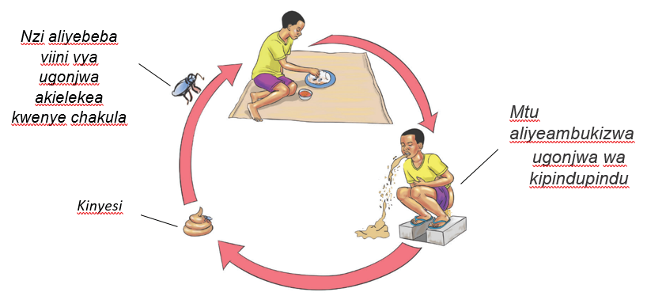

Kipindupindu ni ugonjwa wa mlipuko unaosababishwa na bakteria. Ugonjwa huo huambatana na kuhara na kutapika mfululizo.
Kipindupindu kinaenezwa na nzi wanaobeba kinyesi chenye bakteria kutoka sehemu moja kwenda nyingine. Pia, huenezwa kwa kuchafua maji kwa kinyesi chenye viini vya kipindupindu. Mtu hupata kipindupindu anapokula chakula au kunywa maji yaliyo na bakteria wa kipindupindu. Kielelezo namba 2 kinaonesha namna ugonjwa wa kipindupindu unavyoenezwa.

Mgonjwa wa kipindupindu huharisha na kutapika mfululizo. Kinyesi cha mgonjwa wa kipindupindu huonekana kama maji yaliyosafishiwa mchele. Dalili nyingine ni mkojo kuwa na rangi ya manjano, kulegea mwili, na kuishiwa nguvu.
Tunapaswa kuishi katika mazingira safi na kudumisha usafi. Tunashauriwa kula chakula kisafi na cha moto. Vilevile, tunashauriwa